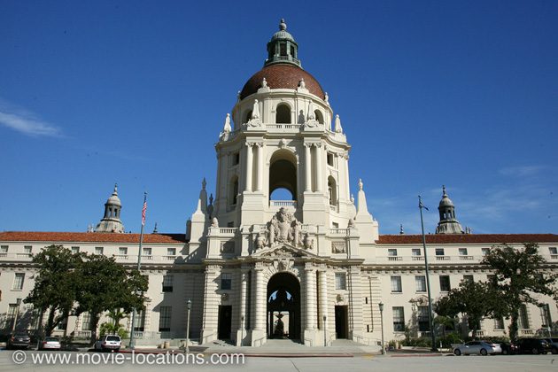

The Great Dictator
Main Content

Lifelong anti-fascist Charlie Chaplin contributed to raising awareness of the war in Europe by playing a Jewish barber mistaken for Adenoid Hynkel, the fascist dictator of 'Tomania'. For the time, it was a brave debunking of both Hitler and Mussolini (parodied by Jack Oakie as fellow fascist Napaloni).
It’s mostly studio-bound in Hollywood, of course, but the war scenes and the duck hunt were filmed around Malibou Lake, south of Mulholland Highway near Cornell in the Santa Monica Mountains.
The location you’ll want to visit is Hynkel’s palace, seen when Napaloni arrives, which is Pasadena City Hall, 100 North Garfield Avenue, Pasadena. It’s probably more familiar today from Beverly Hills Cop 2 (where it provided a more economical stand-in for Beverly Hills City Hall), also the site of a Wine Country festival in Alfonso Arau’s A Walk In The Clouds; the US Embassy in ‘Mexico’ in Sandra Bullock 90s cyber-thriller The Net; and as ‘Spain’ in American Pie II.
You might also recognise it as the city hall of 'Pawnee, Indiana' in TV series Parks and Recreation.
Visit Info
Visit The Film Locations
California | Los Angeles
Visit: Los Angeles
Flights: Los Angeles International Airport (LAX), 1 World Way, Los Angeles, CA 90045 (tel: 424.646.5252)
Travelling around: Los Angeles Metro
Visit: Pasadena
Visit: Pasadena City Hall, 100 Garfield Avenue, Pasadena, CA 91101 (tel: 626.744.7311)